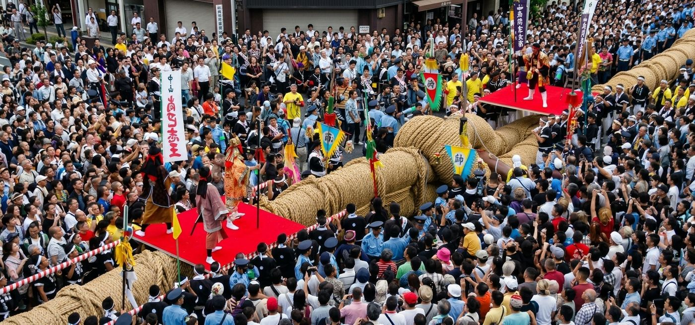
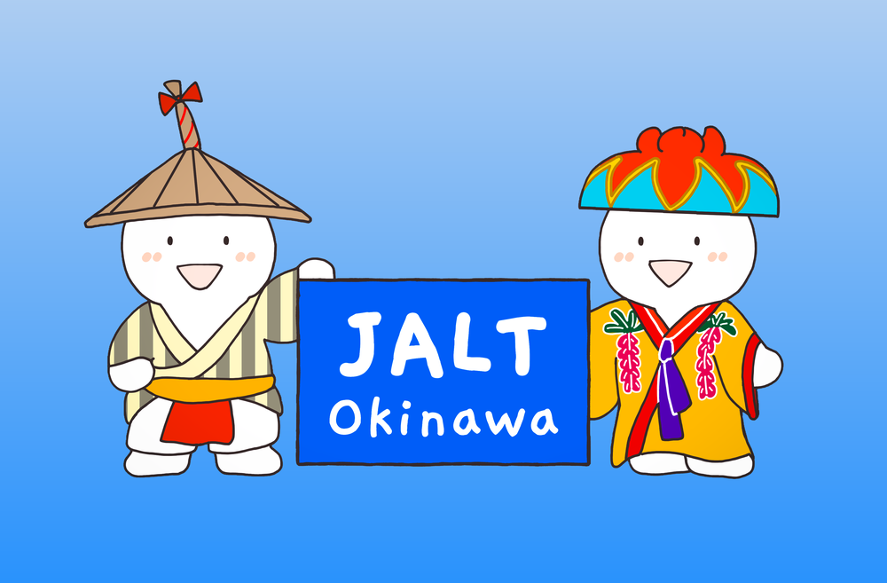

Global Summit 2027
Innovations in Language Education · 言語教育のイノベーション. Three days of research, practice, and community in Naha, timed with the 57th Naha Great Tug-of-War, a UNESCO Intangible Cultural Heritage festival.

Okinawa JALT Global Summit 2027
A dynamic international conference celebrating innovation, collaboration, and community in language education
Conference Dates
October 8–10, 2027
Friday · Saturday · Sunday
Theme
Innovations in Language Education
言語教育のイノベーション
Venue
Gender Equality Center Tiruru
Naha, Okinawa, Japan
Special Event
57th Naha Ōtsunahiki
UNESCO Intangible Cultural Heritage
The Okinawa Chapter of the Japan Association for Language Teaching (JALT) warmly invites language educators, researchers, and professionals from around the world to the Okinawa JALT Global Summit 2027, a dynamic international conference celebrating innovation, collaboration, and community in language education.
Held over three days in the vibrant city of Naha, the Summit coincides with the legendary 57th Naha Ōtsunahiki (Great Tug-of-War Festival), a UNESCO-recognized Intangible Cultural Heritage event drawing over 270,000 participants and spectators. Delegates are invited to experience this extraordinary celebration of Okinawan culture alongside world-class academic programming.
Curious what the Summit looks like? Browse the Global Summit 2026 conference record, with summaries and abstracts from 27 recorded presentations.
Registration Fees
Registration is open now. Early-bird discounts apply to all paid categories: register by July 15, 2027 to save.
† The digital presenter fee covers pre-recorded video submissions and is required for all digital presenters.
Key Dates & Deadlines
Mark your calendar
- April 1, 2027Call for Proposals opensAttendee registration is already open
- June 15, 2027Proposal / abstract submission deadline
- July 1, 2027Acceptance notifications sent to presenters
- July 15, 2027Early bird registration deadline
- August 15, 2027Presenter registration & payment deadlineSecure your session slot
- September 15, 2027Digital presenter video submission deadline
- October 5, 2027Online registration closes
- Oct 8–10, 2027🎉 Conference!Onsite registration available · Okinawa Prefecture Gender Equality Center Tiruru, Naha
Provisional Program
Three-day schedule. Full program with speaker names, session titles, times, and room assignments will be published closer to the event (details TBA).
Day 1
- Registration & badge collection
- Opening ceremony & plenary
- Concurrent sessions
- Welcome reception
Day 2
- Keynote / featured speaker
- Full-day parallel sessions
- Poster sessions
- SIG forums
- Conference dinner
Day 3
- Morning plenary
- Final sessions & awards ceremony
- Closing ceremony
- 🪢 57th Naha Great Tug-of-War Festival
Naha Ōtsunahiki: The Great Tug-of-War
Cultural highlight · 57th annual · UNESCO heritage

The conference weekend coincides with the legendary Naha Ōtsunahiki (Great Tug-of-War), one of the world's largest tug-of-war events, held annually on National Sports Day in October along Kokusai-dōri, Naha's famous international street.
Recognized as a UNESCO Intangible Cultural Heritage, the event draws over 270,000 participants and spectators. The great straw rope stretches 200 metres and weighs 40 tonnes. Sunday afternoon sessions conclude early to allow all delegates to experience this extraordinary event.
Call for Proposals
Share your research and expertise
We welcome proposals on any topic related to language teaching, learning, and research. The conference theme is Innovations in Language Education, and we particularly encourage submissions that explore:
- Technology & AI in language teaching
- Innovative classroom methodologies
- Intercultural competence & identity
- Collaborative & community-based learning
- Okinawan / Ryukyuan cultural heritage in ELT
- Heritage language maintenance & revitalization
- Assessment & feedback innovations
- Teacher development & well-being
- Global English & multilingualism
- Curriculum design & materials development
- Digital literacies & online learning
- Learner motivation & autonomy
🎤 Research Presentation
20 min + 5 min Q&A
📋 Poster Presentation
Saturday & Sunday sessions
💻 Digital Presentation
Pre-recorded MP4 submission
Conference Location
Naha's festival district
Okinawa Prefecture Gender Equality Center Tiruru
沖縄県男女共同参画センター「てぃるる」
3-11-1 Nishi, Naha, Okinawa 900-0036, Japan
The venue is centrally located in Naha, just minutes from the site of the 57th Naha Great Tug-of-War and the heart of the city's October festival district. Delegates will be within easy walking or transit distance of Kokusai-dōri (International Street), Naha's main festival parade route, and the surrounding cultural events that fill the city during this season. Sunday's sessions will conclude early to allow delegates to join the Naha Great Tug-of-War Festival.

Okinawa JALT Global Summit 2027
October 8–10, 2027 · Naha, Okinawa, Japan
🌐 sites.google.com/view/joinokinawa
✉️ okijalt@gmail.com
▶️ @okinawajalt on YouTube
#OkinawaJALT #GlobalSummit2027